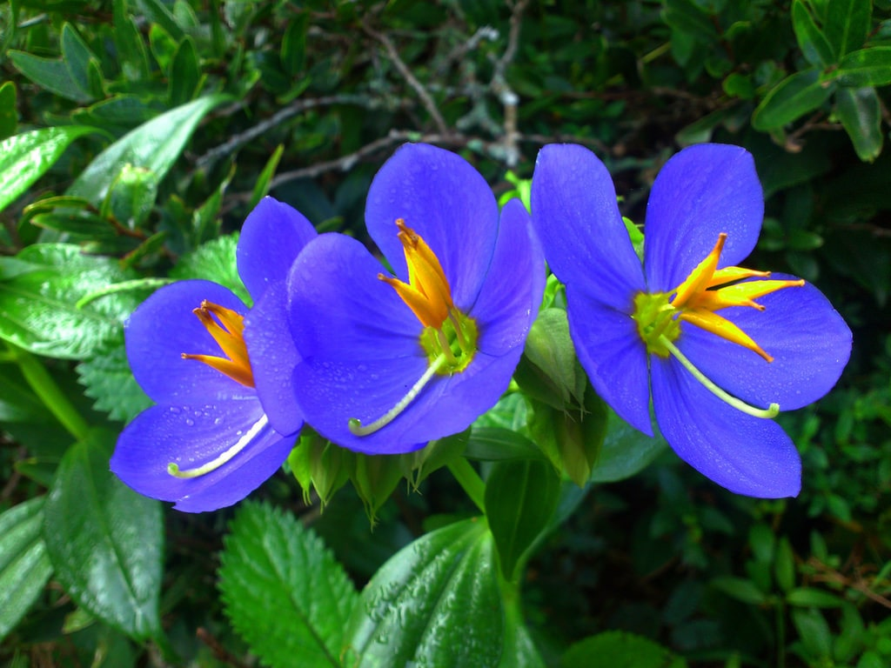
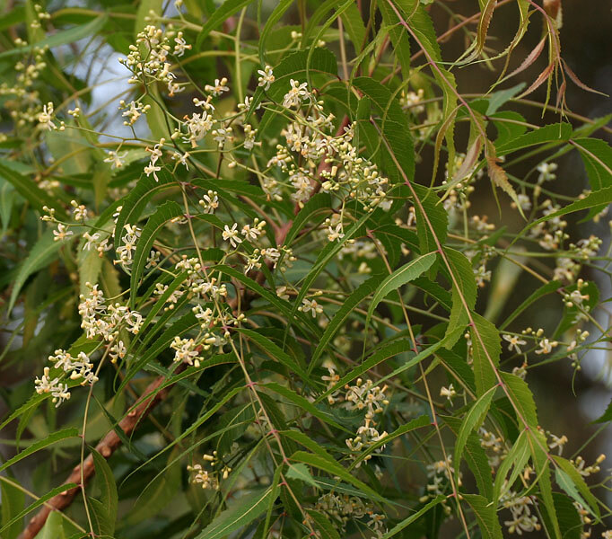
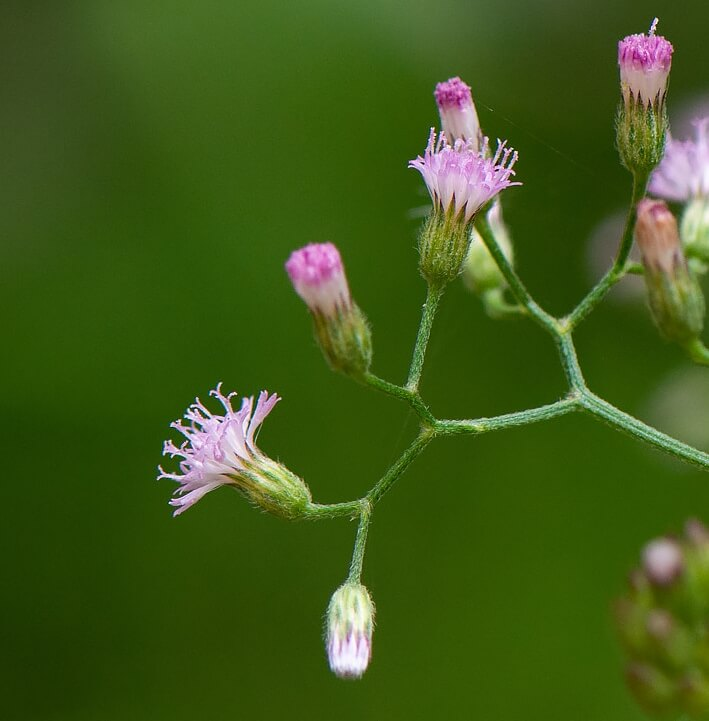

Our notable fauna 🐾
Our long-necked beauties~
No child can resist petting them! They are, of course, giraffes!
With their elegant necks, these graceful creatures are beloved by all. You could spend days watching them munch peacefully on our very own zoo-grown acacia trees.
Surrounded by adults and kids alike, we are pleased to say that they are one of the Dehiwala Zoo's best additions!

They roar and they snore~
You can't live in Sri Lanka and not see our very own, native Sri Lankan leopards! These fiesty wild cats may not purr, but they can sure melt your heart!
Might be a bit controversial, but it's safe to say that a crowd favourite, is not the leopard itself, but their cubs! Their sheer adorableness might make you unwittingly spend the whole day at their exhibit!
Hey you! 👋🏼
Yeah you!
Take a ssssssecretive look at our new, descriptive pages for the famous anaconda!
The first one's here and you can click this for the second one! 🐍
Our notable flora 🌸
Image |
Name |
Features |
Benefits |
|  | Binara |
|
|
|  | Kohomba |
|
|
|  | Ironweed |
|
|
| For more information on our indigenous plants, take a look at the official Ayurvedic Plants webpage. | |||